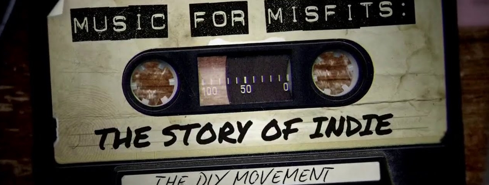

A. DEFINISI
Apakah definisi dari musik indie menurut loe?
Sebenarnya menurut gw, musik indie sebagai aliran atau genre musik itu “not even exist” ( tidak ada-red), karena yang disebut musik indie itu adalah untuk membedakan antara yang mainstream dengan indie. Jadi musik indie adalah istilah untuk membedakan antara musik yang dimainkan oleh musisi profesional dengan musisi amatir. Tapi Baca Selengkapnya......
A. SEJARAH MUSIK INDIE DI INDONESIA

Musisi Indonesia banyak mengadopsi budaya barat dalam berkarya. Sebagai negara bagian dunia ketiga, kita memiliki banyak ketertinggalan dalam soal ekonomi dibanding dengan negara-negara maju. Akhirnya musik kelas bawah di belahan utara bumi diadaptasi oleh kelas menengah di Indonesia. Karena kelas menengah memiliki kesempatan lebih untuk mengintip perkembangan dunia musik luar negeri ketika itu.
Tak heran Presiden Soekarno kala itu pernah memenjarakan Koes Plus, karena musiknya dituduh identik dengan budaya kapitalisme internasional. Soekarno dengan padangan politiknya melihat musik Koes Plus bukan hal yang penting bagi kelas bawah di Indonesia. Koes Plus juga tak salah jika mengadaptasi musik yang menurut mereka mengekspresikan kebebasan.
Pada tahun 70an perkembangan musik di belahan utara bumi melaju cepat,. Baca Selengkapnya......
A. MUSIK INDIE DI INDONESIA
Pergerakan musik indie sudah cukup lama bergema di Indonesia dan berhasil menelurkan musisi-musisi dengan karya hebat dan kemampuan andal yang seringkali tidak terlalu dikenal di negeri sendiri. Indie sendiri merupakan kependekan dari independent, yang artinya mandiri. Maksudnya, para musisi-musisi indie mengerjakan semuanya secara mandiri, mulai dari proses pengerjaan lagu hingga pemasaran.
Ada begitu banyak musisi indie berkualitas di Indonesia yang sudah menghasilkan lagu-lagu yang tidak kamu ketahui dan bisa membuat kamu larut dan terpukau akan bakat-bakat mereka. Nah, beberapa karya musisi indie yang IDN Times kumpulkan ini dapat membangkitkan sisi nasionalisme di dalam dirimu untuk lebih menghargai karya negeri sendiri.
1. SORE
SORE merupakan band indie beraliran pop asal Jakarta dengan prestasi seperti penampilan yang sukses di Malaysia dan ranking teratas lima band yang wajib didengar versi TIME Asia. Baca Selengkapnya......
| Hits Saat Ini


|